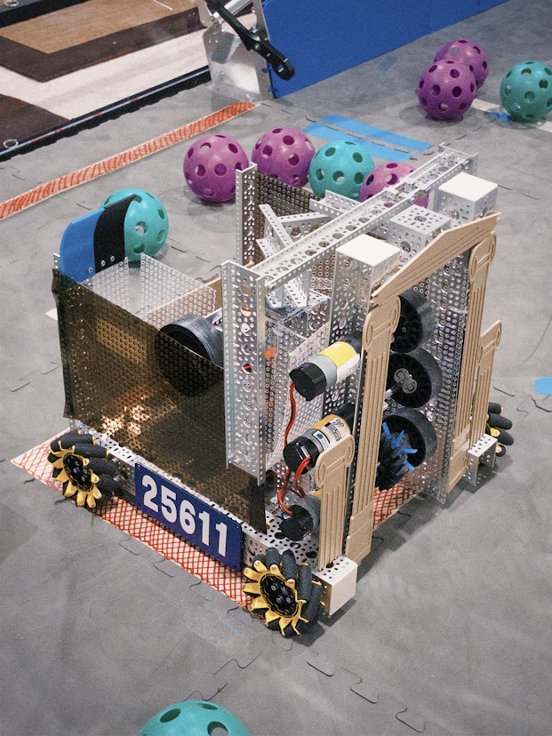

Robot V1
October 12, 2025
A closer look at the mechanisms, prototypes, and design changes behind our robots.
A look back at the prototypes, mechanisms, and small changes behind our 2025–26 robot.
Revisit the build
Four versions. A season of learning.
October 12, 2025
October 20, 2025
November 8, 2025
December 5, 2025
Nine milestones, in order, from first sketch to the final qualifier.
October 4, 2025
October 5, 2025
October 11, 2025
October 12, 2025
October 19, 2025
October 20, 2025
October 26, 2025
November 8, 2025
December 5, 2025
Our 2026–27 robot is still in development. Explore V1 and V2 below.
Watch our videos and learn alongside us.